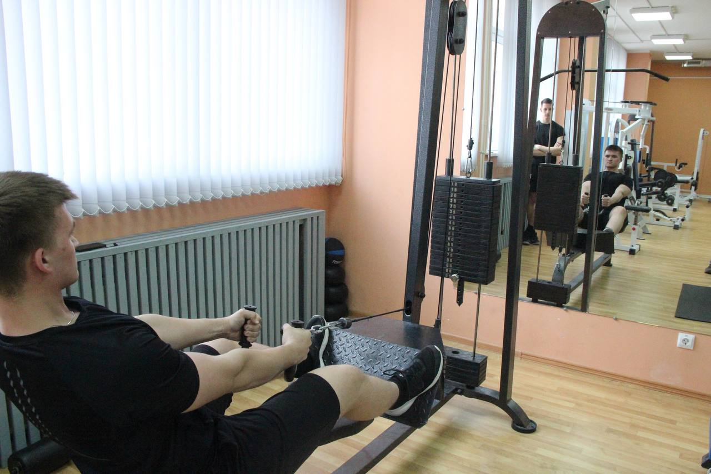
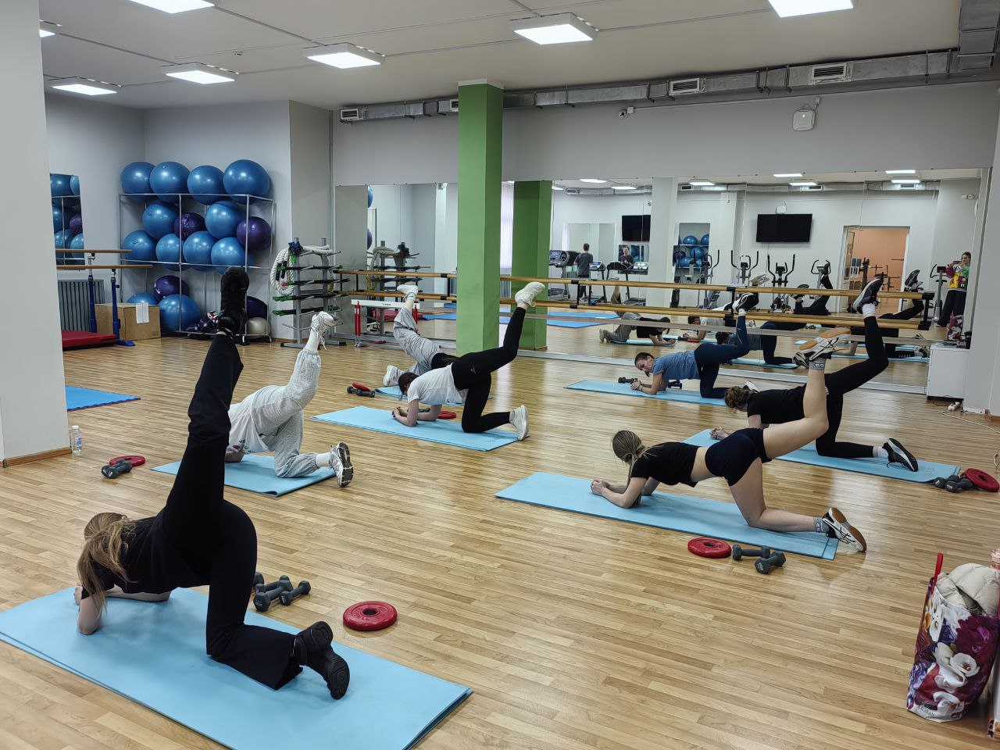

Тренажёрный зал и фитнес-зал
В нашей школе тренажёрный зал - это важное место для отдыха от ежедневных забот и физико-математических нагрузок.
Заниматься в нем могут школьники, выпускники и сотрудники ФМШ СФУ ежедневно. Даже в выходные дни!
В тренажерном зале находится 21 тренажёр со свободным весом, несколько беговых дорожек, велотренажёров и эллипсов. Каждый из них развивает разную группу мышц, что способствует укреплению всего организма. Интересно, что здесь нет ни одного тренажера, который бы простаивал без дела, все они вносят свой вклад в спортивные достижения и форму ребят.
Тренажерный зал в ФМШ СФУ обладает такой популярностью, что в один из обычных дней на занятия пришли 52 человека одновременно!
Здесь же, рядом с тренажёрами, находится не менее полезное место - фитнес-зал. Каждую неделю здесь проходят занятия секции "Фитнес", куда могут прийти не только девушки, но и парни. Зал полностью оснащен оборудованием для занятий фитнесом, растяжкой и гимнастикой.
В наших залах каждый обучающийся найдет для себя занятие по душе!